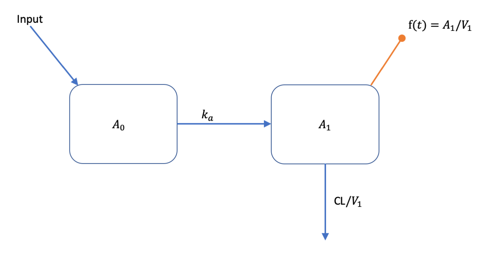
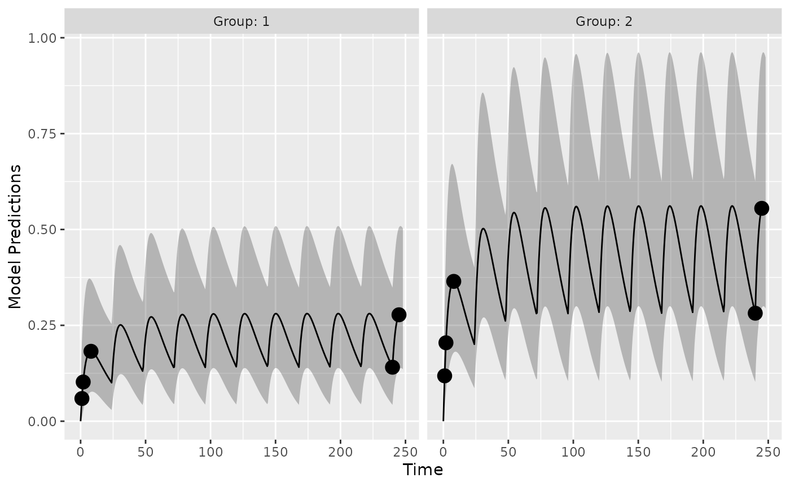

Defining models for PopED using R based PKPD simulators
Andrew Hooker, Ron Keizer and Vijay Ivaturi
Source:vignettes/articles/model_def_other_pkgs.Rmd
model_def_other_pkgs.RmdIntroduction
This is a simple example on how to couple PopED with external R based PKPD simulation tools. Typically, these tools might be R packages that can simulate from ordinary differential equation (ODE) based models. In this document you will see how to couple PopED to models, defined with ODEs, implemented using:
- deSolve (with native R ODE models)
- deSolve (with compiled C ODE models)
- deSolve (with compiled C++ ODE models using Rcpp)
- PKPDsim
- mrgsolve
- rxode2
The model
We will use a one-compartment with linear absorption population pharmacokinetic (PK) model as an example (see below).

This model can be described with the following set of ODEs:
\[ \begin{split} \frac{dA_{0}}{dt} &= - k_{a} \cdot A_{0}\\ \frac{dA_{1}}{dt} &=-(CL/V_1)\cdot A_1 + k_{a} \cdot A_{0} \\ f(t) &= A_1/V_1 \end{split} \]
All compartment amounts are assumed to be zero at time zero (\(\boldsymbol{A}[t=0]=0\)). Inputs to the system come in tablet form and are added to the amount in \(A_{0}\) according to
\[ \text{Input}(t,D,t_D) = \begin{cases} D, &\text{if} \quad t = t_D \\ 0, &\text{otherwise} \end{cases} \]
Parameter values are defined as:
\[ \begin{split} k_a &= \theta_{k_a} \cdot e^{\eta_{k_a}} \\ CL &= \theta_{CL} \cdot e^{\eta_{CL}} \\ V_1 &= \theta_{V_1} \cdot e^{\eta_{V_1}} \\ \end{split} \] where elements of the between subject variability (BSV), \(\eta_{j}\), vary across individuals and come from normal distributions with means of zero and variances of \(\omega^2_{j}\).
The residual unexplained variability (RUV) model has a proportional and additive component
\[ y = f(t) \cdot (1+\varepsilon_{prop}) + \varepsilon_{add} \]
elements of \(\boldsymbol{\varepsilon}_{j}\) vary accross observations and come from normal distributions with means of zero and variances of \(\sigma^2_{j}\).
Parameter values are assumed to be the following:| Parameter | Value |
|---|---|
| \(k_a\) | 0.2500 |
| CL | 3.7500 |
| \(V_1\) | 72.8000 |
| \(\omega^2_{k_a}\) | 0.0900 |
| \(\omega^2_{CL}\) | 0.0625 |
| \(\omega^2_{V_1}\) | 0.0900 |
| \(\sigma^2_{prop}\) | 0.0400 |
| \(\sigma^2_{add}\) | 0.0025 |
Model implementation
Below we implement this model using a number of different methods.
For the ODE solvers, if possible, we set the tuning parameters to be the
same values (atol, rtol, etc.).
Analytic solution
First we implement an analytic solution to the model in a function
that could be used in PopED. Here we assume a single dose
or multiple dosing with a dose interval of TAU time units.
The named vector parameters defines the values of
KA, CL, V, DOSE and
TAU used to compute the value of f at each
time point in the vector xt.
ff_analytic <- function(model_switch,xt,parameters,poped.db){
with(as.list(parameters),{
y=xt
N = floor(xt/TAU)+1
f=(DOSE/V)*(KA/(KA - CL/V)) *
(exp(-CL/V * (xt - (N - 1) * TAU)) * (1 - exp(-N * CL/V * TAU))/(1 - exp(-CL/V * TAU)) -
exp(-KA * (xt - (N - 1) * TAU)) * (1 - exp(-N * KA * TAU))/(1 - exp(-KA * TAU)))
return(list( f=f,poped.db=poped.db))
})
}ODE solution using deSolve
The same model can be implemented using ODEs. Here the ODEs are defined in deSolve:
PK_1_comp_oral_ode <- function(Time, State, Pars){
with(as.list(c(State, Pars)), {
dA1 <- -KA*A1
dA2 <- KA*A1 - (CL/V)*A2
return(list(c(dA1, dA2)))
})
}Then, just as in the analytic solution, the named vector
parameters defines the values of KA,
CL, V, DOSE and TAU
used to compute the value of f at each time point in the
vector xt. The inputs to the system (dosing amounts and
times) need to be added as events in the deSolve ODE solver
called deSolve::ode().
ff_ode_desolve <- function(model_switch, xt, parameters, poped.db){
with(as.list(parameters),{
A_ini <- c(A1=0, A2=0)
#Set up time points for the ODE
times_xt <- drop(xt)
times <- c(0,times_xt) ## add extra time for start of the experiment
dose_times = seq(from=0,to=max(times_xt),by=TAU)
times <- c(times,dose_times)
times <- sort(times)
times <- unique(times) # remove duplicates
eventdat <- data.frame(var = c("A1"),
time = dose_times,
value = c(DOSE), method = c("add"))
out <- deSolve::ode(A_ini, times, PK_1_comp_oral_ode, parameters,
events = list(data = eventdat),
atol=1e-8, rtol=1e-8,maxsteps=5000)
# grab timepoint values
out = out[match(times_xt,out[,"time"]),]
f = out[,"A2"]/V
f=cbind(f) # must be a column matrix
return(list(f=f,poped.db=poped.db))
})
}ODE solution using deSolve and compiled C code
We can use compiled C code with deSolve to speed up computing solutions to the ODEs. The C code is written in a separate file is that needs to be compiled and looks like this:
/* file one_comp_oral_CL.c */
#include <R.h>
static double parms[3];
#define CL parms[0]
#define V parms[1]
#define KA parms[2]
/* initializer */
void initmod(void (* odeparms)(int *, double *))
{
int N=3;
odeparms(&N, parms);
}
/* Derivatives and 1 output variable */
void derivs (int *neq, double *t, double *y, double *ydot,
double *yout, int *ip)
{
if (ip[0] <1) error("nout should be at least 1");
ydot[0] = -KA*y[0];
ydot[1] = KA*y[0] - CL/V*y[1];
yout[0] = y[0]+y[1];
}
/* END file one_comp_oral_CL.c */This code is available as a file in the PopED distribution, and is compiled with the following commands:
file.copy(system.file("examples/one_comp_oral_CL.c", package="PopED"),"./one_comp_oral_CL.c")
#> [1] TRUE
system('R CMD SHLIB one_comp_oral_CL.c')
dyn.load(paste("one_comp_oral_CL", .Platform$dynlib.ext, sep = ""))The function used to compute the value of f at each time
point in the vector xt, given the inputs to the system
(dosing amounts and times), needs to be changed slightly, updating the
arguments to deSolve::ode().
ff_ode_desolve_c <- function(model_switch, xt, parameters, poped.db){
with(as.list(parameters),{
A_ini <- c(A1=0, A2=0)
#Set up time points for the ODE
times_xt <- drop(xt)
times <- c(0,times_xt) ## add extra time for the start of the experiment
dose_times = seq(from=0,to=max(times_xt),by=TAU)
times <- c(times,dose_times)
times <- sort(times)
times <- unique(times) # remove duplicates
eventdat <- data.frame(var = c("A1"),
time = dose_times,
value = c(DOSE), method = c("add"))
out <- deSolve::ode(A_ini, times, func = "derivs",
parms = c(CL,V,KA),
dllname = "one_comp_oral_CL",
initfunc = "initmod", nout = 1,
outnames = "Sum",
events = list(data = eventdat),
atol=1e-8, rtol=1e-8,maxsteps=5000)
# grab timepoint values
out = out[match(times_xt,out[,"time"]),]
f = out[, "A2"]/V
f=cbind(f) # must be a column matrix
return(list(f=f,poped.db=poped.db))
})
}ODE solution using deSolve and compiled C++ code (via Rcpp)
Here we define the ODE system using inline C++ code that is compiled via Rcpp
cppFunction('List one_comp_oral_rcpp(double Time, NumericVector A, NumericVector Pars) {
int n = A.size();
NumericVector dA(n);
double CL = Pars[0];
double V = Pars[1];
double KA = Pars[2];
dA[0] = -KA*A[0];
dA[1] = KA*A[0] - (CL/V)*A[1];
return List::create(dA);
}')Again, the arguments to deSolve::ode() need to be
updated:
ff_ode_desolve_rcpp <- function(model_switch, xt, p, poped.db){
A_ini <- c(A1=0, A2=0)
#Set up time points for the ODE
times_xt <- drop(xt)
times <- c(0,times_xt) ## add extra time for start of integration
dose_times = seq(from=0,to=max(times_xt),by=p[["TAU"]])
times <- c(times,dose_times)
times <- sort(times)
times <- unique(times) # remove duplicates
eventdat <- data.frame(var = c("A1"),
time = dose_times,
value = c(p[["DOSE"]]), method = c("add"))
out <- deSolve::ode(A_ini, times,
one_comp_oral_rcpp,
c(CL=p[["CL"]],V=p[["V"]], KA=p[["KA"]]),
events = list(data = eventdat),
atol=1e-8, rtol=1e-8,maxsteps=5000)
# grab timepoint values for central comp
f = out[match(times_xt,out[,"time"]),"A2",drop=F]/p[["V"]]
return(list(f=f,poped.db=poped.db))
}ODE solution using PKPDsim
We can use PKPDsim to describe this set of ODEs. We then adjust the
function used to compute the value of f at each time point
in the vector xt, given the inputs to the system (dosing
amounts and times), using the ODE solver
PKPDsim::sim_core().
pk1cmtoral <- PKPDsim::new_ode_model("pk_1cmt_oral") # take from library
ff_ode_pkpdsim <- function(model_switch, xt, p, poped.db){
#Set up time points for the ODE
times_xt <- drop(xt)
dose_times <- seq(from=0,to=max(times_xt),by=p[["TAU"]])
times <- sort(unique(c(0,times_xt,dose_times)))
N = length(dose_times)
regimen = PKPDsim::new_regimen(amt=p[["DOSE"]],n=N,interval=p[["TAU"]])
design <- PKPDsim::sim(
ode = pk1cmtoral,
parameters = c(CL=p[["CL"]],V=p[["V"]],KA=p[["KA"]]),
regimen = regimen,
only_obs = TRUE,
t_obs = times,
checks = FALSE,
return_design = TRUE)
tmp <- PKPDsim::sim_core(sim_object = design, ode = pk1cmtoral)
f <- tmp$y
m_tmp <- match(round(times_xt,digits = 6),tmp[,"t"])
if(any(is.na(m_tmp))){
stop("can't find time points in solution\n",
"try changing the digits argument in the match function")
}
f <- f[m_tmp]
return(list(f = f, poped.db = poped.db))
}ODE solution using mrgsolve
We can also use mrgsolve to describe this set of ODEs.
code <- '
$PARAM CL=3.75, V=72.8, KA=0.25
$CMT DEPOT CENT
$ODE
dxdt_DEPOT = -KA*DEPOT;
dxdt_CENT = KA*DEPOT - (CL/V)*CENT;
$TABLE double CP = CENT/V;
$CAPTURE CP
'We then compile and load the model with mcode
moda <- mrgsolve::mcode("optim", code, atol=1e-8, rtol=1e-8,maxsteps=5000)
#> Building optim ... done.Finally, we adjust the function used to compute the value of
f at each time point in the vector xt, given
the inputs to the system (dosing amounts and times), using the ODE
solver mrgsolve::mrgsim_q().
ff_ode_mrg <- function(model_switch, xt, p, poped.db){
times_xt <- drop(xt)
dose_times <- seq(from=0,to=max(times_xt),by=p[["TAU"]])
time <- sort(unique(c(0,times_xt,dose_times)))
is.dose <- time %in% dose_times
data <-
tibble::tibble(ID = 1,
time = time,
amt = ifelse(is.dose,p[["DOSE"]], 0),
cmt = ifelse(is.dose, 1, 0),
evid = cmt,
CL = p[["CL"]], V = p[["V"]], KA = p[["KA"]])
out <- mrgsolve::mrgsim_q(moda, data=data)
f <- out$CP
f <- f[match(times_xt,out$time)]
return(list(f=matrix(f,ncol=1),poped.db=poped.db))
}ODE solution using rxode2
We can use rxode2 to describe this set of ODEs.
modrx <- rxode2::rxode2({
d/dt(DEPOT) = -KA*DEPOT;
d/dt(CENT) = KA*DEPOT - (CL/V)*CENT;
CP=CENT/V;
})
#> using C compiler: ‘gcc (Ubuntu 11.4.0-1ubuntu1~22.04) 11.4.0’We adjust the function used to compute the value of f at
each time point in the vector xt, given the inputs to the
system (dosing amounts and times), using the ODE solver
rxode2::rxSolve().
ff_ode_rx <- function(model_switch, xt, p, poped.db){
times_xt <- drop(xt)
et(0,amt=p[["DOSE"]], ii=p[["TAU"]], until=max(times_xt)) %>%
et(times_xt) -> data
out <- rxode2::rxSolve(modrx, p, data, atol=1e-8, rtol=1e-8,maxsteps=5000,
returnType="data.frame")
f <- out$CP[match(times_xt,out$time)]
return(list(f=matrix(f,ncol=1),poped.db=poped.db))
}Common model elements
Other functions are used to define BSV and RUV.
sfg <- function(x,a,bpop,b,bocc){
parameters=c(
KA=bpop[1]*exp(b[1]),
CL=bpop[2]*exp(b[2]),
V=bpop[3]*exp(b[3]),
DOSE=a[1],
TAU=a[2])
return( parameters )
}
feps <- function(model_switch,xt,parameters,epsi,poped.db){
f <- do.call(poped.db$model$ff_pointer,list(model_switch,xt,parameters,poped.db))[[1]]
y = f*(1+epsi[,1])+epsi[,2]
return(list(y=y,poped.db=poped.db))
}Create PopED databases
Next we define the model to use, the parameters of those models, the intial design design and design space for any design calculation. Here we create a number of databases that correspond to different model implementations.
The initial design is a 2 group design, with doses of 20 mg or 40 mg every 24 hours. Each group has the same sampling schedule, with 3 samples in the first day of the study and 2 on the 10th day of the study.
poped_db_analytic <- create.poped.database(
ff_fun =ff_analytic,
fg_fun =sfg,
fError_fun=feps,
bpop=c(KA=0.25,CL=3.75,V=72.8),
d=c(KA=0.09,CL=0.25^2,V=0.09),
sigma=c(prop=0.04,add=0.0025),
m=2,
groupsize=20,
xt=c( 1,2,8,240,245),
minxt=c(0,0,0,240,240),
maxxt=c(10,10,10,248,248),
bUseGrouped_xt=1,
a=cbind(DOSE=c(20,40),TAU=c(24,24)),
maxa=c(DOSE=200,TAU=24),
mina=c(DOSE=0,TAU=24))
poped_db_ode_desolve <- create.poped.database(poped_db_analytic,ff_fun = ff_ode_desolve)
poped_db_ode_desolve_c <- create.poped.database(poped_db_analytic,ff_fun = ff_ode_desolve_c)
poped_db_ode_desolve_rcpp <- create.poped.database(poped_db_analytic,ff_fun = ff_ode_desolve_rcpp)
poped_db_ode_pkpdsim <- create.poped.database(poped_db_analytic,ff_fun = ff_ode_pkpdsim)
poped_db_ode_mrg <- create.poped.database(poped_db_analytic,ff_fun = ff_ode_mrg)
poped_db_ode_rx <- create.poped.database(poped_db_analytic,ff_fun = ff_ode_rx)Model predictions
So are there difference in the model predictions between the different implementations?
Here is a visual representation of the model predictions for this study design, based on the analytic solution:
plot_model_prediction(poped_db_analytic,model_num_points = 500,PI=T,separate.groups = T) 
We can compare the different predictions in this plot accross model implementations. Here we see that the accuracy of the different methods are within machine precision (or very small).
pred_std <- model_prediction(poped_db_analytic,model_num_points = 500,include_sample_times = TRUE,PI = TRUE)
pred_ode_desolve <- model_prediction(poped_db_ode_desolve,
model_num_points = 500,
include_sample_times = TRUE,
PI = TRUE)
all.equal(pred_std,pred_ode_desolve)
#> [1] TRUE
pred_ode_desolve_c <- model_prediction(poped_db_ode_desolve_c,
model_num_points = 500,
include_sample_times = TRUE,
PI = TRUE)
all.equal(pred_std,pred_ode_desolve_c)
#> [1] TRUE
pred_ode_desolve_rcpp <- model_prediction(poped_db_ode_desolve_rcpp,
model_num_points = 500,
include_sample_times = TRUE,
PI = TRUE)
all.equal(pred_std,pred_ode_desolve_rcpp)
#> [1] TRUE
pred_ode_pkpdsim <- model_prediction(poped_db_ode_pkpdsim,
model_num_points = 500,
include_sample_times = TRUE,
PI = TRUE)
all.equal(pred_std,pred_ode_pkpdsim)
#> [1] "Component \"PI_l\": Mean relative difference: 1.998734e-08"
pred_ode_mrg <- model_prediction(poped_db_ode_mrg,
model_num_points = 500,
include_sample_times = TRUE,
PI = TRUE)
all.equal(pred_std,pred_ode_mrg)
#> [1] TRUE
pred_ode_rx <- model_prediction(poped_db_ode_rx,
model_num_points = 500,
include_sample_times = TRUE,
PI = TRUE)
all.equal(pred_std,pred_ode_rx)
#> [1] TRUEEvaluate the design
Here we compare the computation of the Fisher Information Matrix (FIM). By comparing the \(ln(det(FIM))\) (the lnD-objective function value, or ofv).
(eval_std <- evaluate_design(poped_db_analytic))
#> $ofv
#> [1] 48.98804
#>
#> $fim
#> KA CL V d_KA d_CL d_V
#> KA 1695.742314 -11.73537527 -6.75450789 0.00000 0.00000 0.00000
#> CL -11.735375 29.99735715 -0.03288331 0.00000 0.00000 0.00000
#> V -6.754508 -0.03288331 0.04213359 0.00000 0.00000 0.00000
#> d_KA 0.000000 0.00000000 0.00000000 147.24270 1.52226 192.23403
#> d_CL 0.000000 0.00000000 0.00000000 1.52226 2254.55188 1.21987
#> d_V 0.000000 0.00000000 0.00000000 192.23403 1.21987 634.42055
#> sig_prop 0.000000 0.00000000 0.00000000 148.86724 844.57325 387.53816
#> sig_add 0.000000 0.00000000 0.00000000 6555.68433 14391.88132 8669.58391
#> sig_prop sig_add
#> KA 0.0000 0.000
#> CL 0.0000 0.000
#> V 0.0000 0.000
#> d_KA 148.8672 6555.684
#> d_CL 844.5733 14391.881
#> d_V 387.5382 8669.584
#> sig_prop 7759.5374 110702.705
#> sig_add 110702.7045 4436323.946
#>
#> $rse
#> KA CL V d_KA d_CL d_V sig_prop
#> 16.285678 4.909749 11.209270 120.825798 34.448477 57.300408 36.104027
#> sig_add
#> 24.339781All the computations give very similar results:
eval_ode_desolve <- evaluate_design(poped_db_ode_desolve)
all.equal(eval_std$ofv,eval_ode_desolve$ofv)
#> [1] "Mean relative difference: 2.493043e-08"
eval_ode_desolve_c <- evaluate_design(poped_db_ode_desolve_c)
all.equal(eval_std$ofv,eval_ode_desolve_c$ofv)
#> [1] "Mean relative difference: 2.493043e-08"
eval_ode_desolve_rccp <- evaluate_design(poped_db_ode_desolve_rcpp)
all.equal(eval_std$ofv,eval_ode_desolve_rccp$ofv)
#> [1] "Mean relative difference: 2.493043e-08"
eval_ode_pkpdsim <- evaluate_design(poped_db_ode_pkpdsim)
all.equal(eval_std$ofv,eval_ode_pkpdsim$ofv)
#> [1] TRUE
eval_ode_mrg <- evaluate_design(poped_db_ode_mrg)
all.equal(eval_std$ofv,eval_ode_mrg$ofv)
#> [1] "Mean relative difference: 2.361612e-08"Speed of FIM computation
We can compare the speed of the computations. Analytic solutions are fast, as expected, in this case more than 20 times faster than any of the ODE methods. mrgsolve is the fastest of the ODE solvers in this example. Note that much of the speed difference between mrgsolve, RxODE and PKPDsim has been found to be due to the overhead from pre- and post-processing of the simulation from ODE systems. Other ways of handling the pre- and post-processing may speed up these computations.
library(microbenchmark)
library(ggplot2)
compare <- microbenchmark(
evaluate_design(poped_db_analytic),
evaluate_design(poped_db_ode_desolve),
evaluate_design(poped_db_ode_desolve_c),
evaluate_design(poped_db_ode_desolve_rcpp),
evaluate_design(poped_db_ode_pkpdsim),
evaluate_design(poped_db_ode_mrg),
evaluate_design(poped_db_ode_rx),
times = 100L)
autoplot(compare)
Version information
devtools::session_info()
#> ─ Session info ───────────────────────────────────────────────────────────────
#> setting value
#> version R version 4.3.2 (2023-10-31)
#> os Ubuntu 22.04.3 LTS
#> system x86_64, linux-gnu
#> ui X11
#> language en
#> collate C.UTF-8
#> ctype C.UTF-8
#> tz UTC
#> date 2023-11-16
#> pandoc 2.19.2 @ /usr/bin/ (via rmarkdown)
#>
#> ─ Packages ───────────────────────────────────────────────────────────────────
#> package * version date (UTC) lib source
#> backports 1.4.1 2021-12-13 [1] RSPM
#> BH 1.81.0-1 2023-01-22 [1] RSPM
#> bslib 0.5.1 2023-08-11 [1] RSPM
#> cachem 1.0.8 2023-05-01 [1] RSPM
#> callr 3.7.3 2022-11-02 [1] RSPM
#> checkmate 2.3.0 2023-10-25 [1] RSPM
#> cli 3.6.1 2023-03-23 [1] RSPM
#> codetools 0.2-19 2023-02-01 [3] CRAN (R 4.3.2)
#> colorspace 2.1-0 2023-01-23 [1] RSPM
#> crayon 1.5.2 2022-09-29 [1] RSPM
#> data.table 1.14.8 2023-02-17 [1] RSPM
#> desc 1.4.2 2022-09-08 [1] RSPM
#> deSolve * 1.38 2023-09-05 [1] RSPM
#> devtools 2.4.5 2022-10-11 [1] RSPM
#> digest 0.6.33 2023-07-07 [1] RSPM
#> dparser 1.3.1-10 2023-03-16 [1] RSPM
#> dplyr 1.1.3 2023-09-03 [1] RSPM
#> ellipsis 0.3.2 2021-04-29 [1] RSPM
#> evaluate 0.23 2023-11-01 [1] RSPM
#> fansi 1.0.5 2023-10-08 [1] RSPM
#> farver 2.1.1 2022-07-06 [1] RSPM
#> fastmap 1.1.1 2023-02-24 [1] RSPM
#> fs 1.6.3 2023-07-20 [1] RSPM
#> generics 0.1.3 2022-07-05 [1] RSPM
#> ggplot2 3.4.4 2023-10-12 [1] RSPM
#> glue 1.6.2 2022-02-24 [1] RSPM
#> gtable 0.3.4 2023-08-21 [1] RSPM
#> highr 0.10 2022-12-22 [1] RSPM
#> htmltools 0.5.7 2023-11-03 [1] RSPM
#> htmlwidgets 1.6.2 2023-03-17 [1] RSPM
#> httpuv 1.6.12 2023-10-23 [1] RSPM
#> httr 1.4.7 2023-08-15 [1] RSPM
#> jquerylib 0.1.4 2021-04-26 [1] RSPM
#> jsonlite 1.8.7 2023-06-29 [1] RSPM
#> kableExtra * 1.3.4 2021-02-20 [1] RSPM
#> knitr * 1.45 2023-10-30 [1] RSPM
#> labeling 0.4.3 2023-08-29 [1] RSPM
#> later 1.3.1 2023-05-02 [1] RSPM
#> lattice 0.21-9 2023-10-01 [3] CRAN (R 4.3.2)
#> lifecycle 1.0.4 2023-11-07 [1] RSPM
#> lotri 0.4.3 2023-03-20 [1] RSPM
#> magrittr 2.0.3 2022-03-30 [1] RSPM
#> memoise 2.0.1 2021-11-26 [1] RSPM
#> mime 0.12 2021-09-28 [1] RSPM
#> miniUI 0.1.1.1 2018-05-18 [1] RSPM
#> mrgsolve * 1.1.1 2023-08-16 [1] RSPM
#> munsell 0.5.0 2018-06-12 [1] RSPM
#> nlme 3.1-163 2023-08-09 [3] CRAN (R 4.3.2)
#> pillar 1.9.0 2023-03-22 [1] RSPM
#> pkgbuild 1.4.2 2023-06-26 [1] RSPM
#> pkgconfig 2.0.3 2019-09-22 [1] RSPM
#> pkgdown 2.0.7 2022-12-14 [1] RSPM
#> pkgload 1.3.3 2023-09-22 [1] RSPM
#> PKPDsim * 1.3.0 2023-03-02 [1] RSPM
#> PopED * 0.6.0.9002 2023-11-16 [1] local
#> PreciseSums 0.6 2023-04-22 [1] RSPM
#> prettyunits 1.2.0 2023-09-24 [1] RSPM
#> processx 3.8.2 2023-06-30 [1] RSPM
#> profvis 0.3.8 2023-05-02 [1] RSPM
#> promises 1.2.1 2023-08-10 [1] RSPM
#> ps 1.7.5 2023-04-18 [1] RSPM
#> purrr 1.0.2 2023-08-10 [1] RSPM
#> qs 0.25.5 2023-02-22 [1] RSPM
#> R6 2.5.1 2021-08-19 [1] RSPM
#> ragg 1.2.6 2023-10-10 [1] RSPM
#> RApiSerialize 0.1.2 2022-08-25 [1] RSPM
#> Rcpp * 1.0.11 2023-07-06 [1] RSPM
#> RcppParallel 5.1.7 2023-02-27 [1] RSPM
#> remotes 2.4.2.1 2023-07-18 [1] RSPM
#> rlang 1.1.2 2023-11-04 [1] RSPM
#> rmarkdown 2.25 2023-09-18 [1] RSPM
#> rprojroot 2.0.4 2023-11-05 [1] RSPM
#> rstudioapi 0.15.0 2023-07-07 [1] RSPM
#> rvest 1.0.3 2022-08-19 [1] RSPM
#> rxode2 * 2.0.14 2023-10-07 [1] RSPM
#> rxode2et 2.0.10 2023-03-17 [1] RSPM
#> rxode2ll 2.0.11 2023-03-17 [1] RSPM
#> rxode2parse 2.0.16 2023-03-28 [1] RSPM
#> rxode2random 2.0.11 2023-03-28 [1] RSPM
#> sass 0.4.7 2023-07-15 [1] RSPM
#> scales 1.2.1 2022-08-20 [1] RSPM
#> sessioninfo 1.2.2 2021-12-06 [1] RSPM
#> shiny 1.7.5.1 2023-10-14 [1] RSPM
#> stringfish 0.15.8 2023-05-30 [1] RSPM
#> stringi 1.8.1 2023-11-13 [1] RSPM
#> stringr 1.5.1 2023-11-14 [1] RSPM
#> svglite 2.1.2 2023-10-11 [1] RSPM
#> sys 3.4.2 2023-05-23 [1] RSPM
#> systemfonts 1.0.5 2023-10-09 [1] RSPM
#> textshaping 0.3.7 2023-10-09 [1] RSPM
#> tibble 3.2.1 2023-03-20 [1] RSPM
#> tidyselect 1.2.0 2022-10-10 [1] RSPM
#> urlchecker 1.0.1 2021-11-30 [1] RSPM
#> usethis 2.2.2 2023-07-06 [1] RSPM
#> utf8 1.2.4 2023-10-22 [1] RSPM
#> vctrs 0.6.4 2023-10-12 [1] RSPM
#> viridisLite 0.4.2 2023-05-02 [1] RSPM
#> webshot 0.5.5 2023-06-26 [1] RSPM
#> withr 2.5.2 2023-10-30 [1] RSPM
#> xfun 0.41 2023-11-01 [1] RSPM
#> xml2 1.3.5 2023-07-06 [1] RSPM
#> xtable 1.8-4 2019-04-21 [1] RSPM
#> yaml 2.3.7 2023-01-23 [1] RSPM
#>
#> [1] /home/runner/work/_temp/Library
#> [2] /opt/R/4.3.2/lib/R/site-library
#> [3] /opt/R/4.3.2/lib/R/library
#>
#> ──────────────────────────────────────────────────────────────────────────────
#sessionInfo()